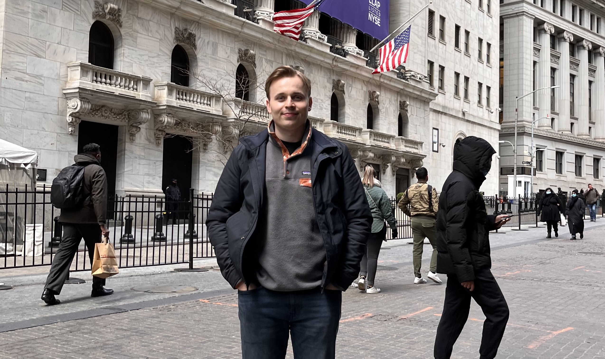
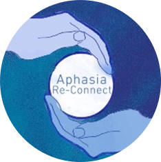

I am a Research Associate at King's College London, having completed my PhD within the Human-Centred Computing Research Group under the supervision of Dr Timothy Neate and Dr Rita Borgo. My doctoral research examined wearable and discreet augmentative and alternative communication (AAC) technologies for people with aphasia following stroke. Through participatory design across disadvantaged London communities, I explored how smartwatches and smartbadges can act as wearable communication safety nets during moments of stress and breakdown, while identifying limitations of smartglasses arising from cognitive load. I am currently open-sourcing this portfolio of wearable AAC tools.
More recently, my work has engaged with the growing role of generative artificial intelligence in accessibility. During an internship with the Ability Team at Microsoft Research, working under Martez Mott and colleagues, I contributed to the design of remote meeting agents for Microsoft Teams to support chronically ill people in maintaining employment and social connection. I am now developing Advokit, an inclusive GenAI-enhanced toolkit co-designed with people with aphasia to support access to public services, including benefit navigation, community stories and language assistance tools.
Outside of my research, I have a wide variety of interests. Particularly, I really enjoy sports, reading, travel, film and food. Currently, I am a long suffering Manchester United fan and have always been an avid golfer. My family has three dogs which means plenty of walking. If I am not frantically typing into a computer you'll most probably find me enjoying a cup of coffee or a good pint of bitter!
Curriculum vitae
Contact
humphrey [dot] curtis {at} kcl.ac.uk (University)
humphreywcurtis {at} gmail [dot] com (Personal)
Address
Department of Informatics
King's College London
Bush House,
Strand Campus
30 Aldwych, London WC2B 4BG
Support
I volunteer weekly at Aphasia Re-Connect, a charity supporting people with aphasia in London.
